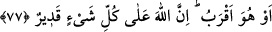

açıklamak içindir. “Onu nereye gönderse” yâni efendisi ona işi îcâbı herhangi bir
görevi yerine getirmek için gönderse “bir hayır getiremez” yâni elinden bir şey gelmez,
yeterli bir iş yapamaz, ne kendisi bir şey anlar, ne de bir kimseye anlatabilir.
Bu cümlenin ayrıca zikredilmesi, iş çok kolay bile olsa efendisinin maslahatını yapma
konusunda hiçbir kudreti olmadığını belirtmek içindir. “Şimdi” yukarıda bahsedilen
vasıflar kendisinde bulunan “bu adamla, doğru yolda yürüyerek adâleti emreden”
insanları fazilet ve mekârim-i ahlaka çağıran, onları adâletle davranmaya teşvik eden,
basîretli, hakka isâbette yetenekli, görüş sâhibi ve güzel konuşan “kimse eşit olur mu?”
O kimse zikredilen özele ve genele faydasının yanında hal ve gidişâtı doğru, beğenilen
bir yol üzeredir ki ne istese ve neye yönelse maksadına ve maksuduna hemen ulaşır. İşte
(bu misaldeki gibi) hiç bir îtibarı olmayan putlar da şânı yüce olan Cenâb-ı Hakk’a eşit
olmaz.
Bu konuda Sehbân ve Bâkıl isimleriyle meşhûr iki şahıs örnek verilir: Sehbân, fesâhat
ve belâgat ehli bir kimse olup gerektiğinde bir gün bir gece söylediğini tekrar etmeden
tutukluk da yapmadan konuşabilirdi. Bakıl ise on bir dirheme bir ceylan satın almış,
fiyatı sorulduğunda on parmağını açıp, on birinci olarak da dilini çıkararak aldığı fiyata
işâret etmiş, bu arada ceylan da elinden kaçmıştı. İşte o âcizlik ve kendini ifâde
edememe konusunda misal getirilir.
İmam Süheylî, Kitabu’t-Ta‘rîf ve’l-i‘lâm fîmâ übhime mine’l-Kur’ân adlı kitabında
der ki: “Âyetteki “dilsiz” ile kasdedilen, Ebû Cehl’dir. İsmi, Amr b. Hişam b. Muğîra b.
Abdullah b. Ömer b. Mahzûm’dur. “Adâleti emreden” Ammar b. Yasir Ansî’dir. Ans,
Müdlicoğulları’nın bir koludur. Onlar Ebû Cehl’in kavmi Mahzumoğulları’nın
müttefikiydi. Ebû Cehl, Müslüman olduğu için ona ve kendisinin azadlı kölesi olan
annesi Sümeyye’ye azab ediyordu. Hatta bir gün Sümeyye’ye: “Sen, Muhammed’e
ancak onun cemâlinden dolayı îmân ettin.” diyerek mızrağını ağzına sapladı, o da vefat
etti. Böylece o İslam’da ilk şehid olan kadın oldu.
Âyette şuna işâret vardır: Nefs-i emmârenin herhangi bir hayrı işlemeye gücü yoktur.
Çünkü onun işi, hevâsına tâbi olmak ve Mevlâsı’na muhâlefet etmektir. Ruh ise nefse
Allah’a itâati ve ona iyi kullukta bulunmayı emreder. Nefis de rûha, Allah’a asi olmayı
ve hevaya uymayı emreder. Tevfik ancak ruh tarafındandır. Mü’minin düşmanı üçtür:
Nefis, şeytan ve dünyâ. O halde muhâlefet ederek nefse, zikir ile şeytana ve kanâat ile
dünyâya karşı koy.
Bir hakîm der ki: Nefis senin hırsızındır, onu tut ve gözet. Yine o senin düşmanındır,
onunla mücâhede et.